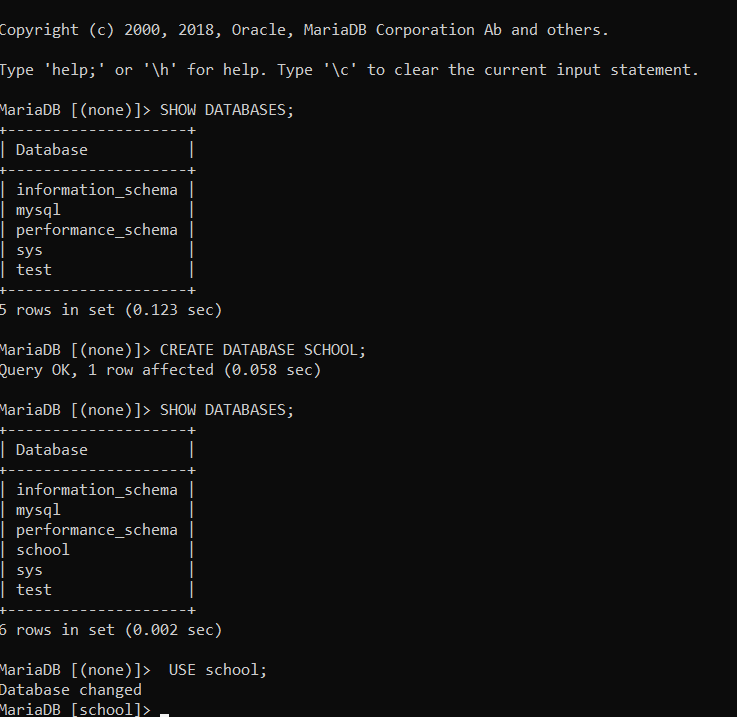
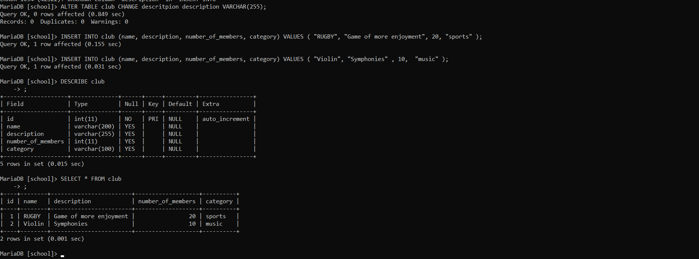
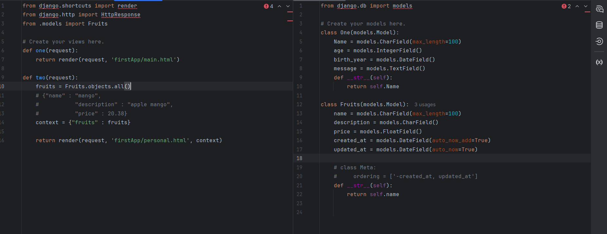
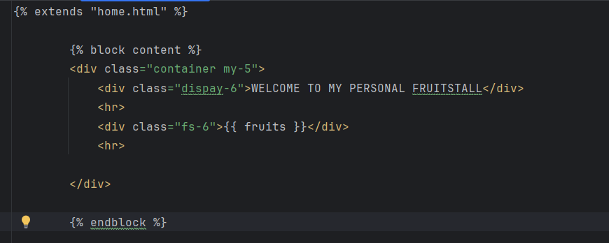

In maria db, we can first identify the present databases by the command
SHOW DATABASE;
After seeing the database we are going to create a database using the command
CREATE DTATABASE SCHOOL;
CREATE is the syntax, DATABASE is the keyword and School is the name of the school
After creating the database we prompt it to use it
USE SCHOOL;

The school could be broken down into small pieces. This can be seen in erb diagrams
The erb diagrams have the table name and the columns themselves.
so create the table show the table and describe the course
CREATE TABLE COURSE(
-> id int PRIMARY KEY AUTO_INCREMENT,
-> name varchar(150)
-> ,
-> description varchar(255),
-> number_of_years int,
-> level varchar(200)
-> );
Query OK, 0 rows affected (0.375 sec)
MariaDB [school]> SHOW TABLES
-> ;
1 row in set (0.001 sec)
MariaDB [school]> DESCRIBE course
-> ;
5 rows in set (0.084 sec)
TO CHANGE A VALUE YOU DO THIS CODE
ALTER TABLE School CHANGE descritpion description VARCHAR(255);
we put data in the school table. We use the code
INSERT INTO school VALUES;(
To see the values in school insert the code below
SELECT * FROM school;
To see a certain category input the code below
SELECT * FROM school WHERE CATEGORY = "age"
To delete a certain data input the code below
DELETE FROM school WHERE name = "input the name";
Dealing with update. maybe you made an error we put the code below
UPDATE school SET level = "class 5" where <id = 5> or < number_of_years = 10> or
<value that is similar an dunique to that column>

create a project and app then create the template, register the site in admin and finaly create a super user for access. dont forget to migrate .
To add something based on the update time use class meta
We can go further and implement the updates in the views
look at the picture below
in the models do as stated and in the views under def fruits include a context with the specification fruits
Go to the index .html and do the adjastment seen below
finaly we are going to end it with the forms.
In te forms we have to create the form.html file. the forms are for adding the data
Next in the views under forms updte it to be able to take in forms and post it in the data
finaly update the urls to be able to transmit it to the web .
test and you will see the progress